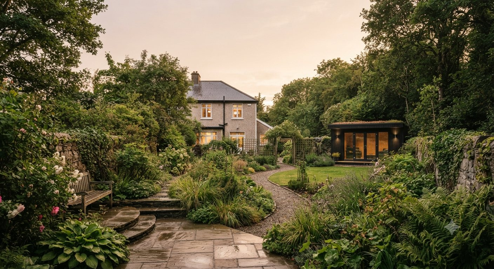
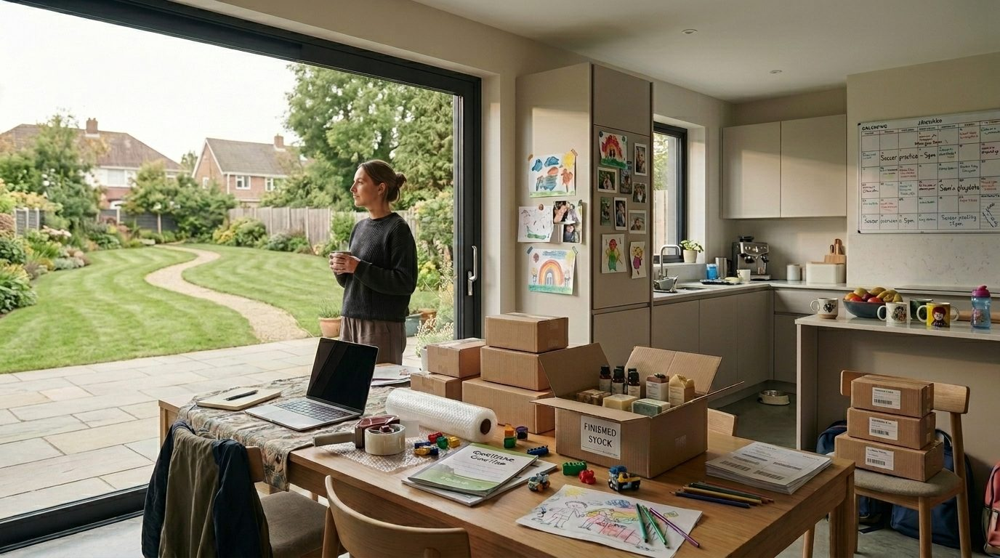
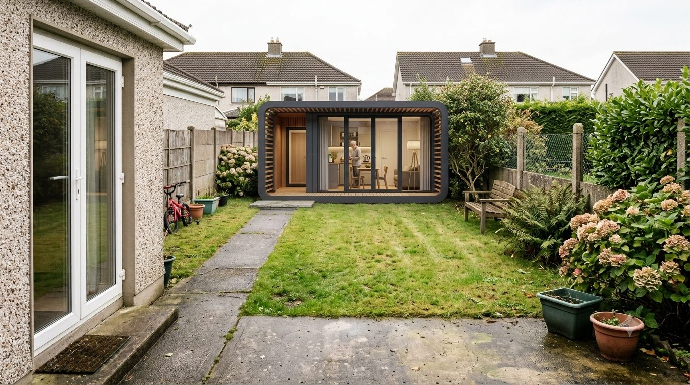
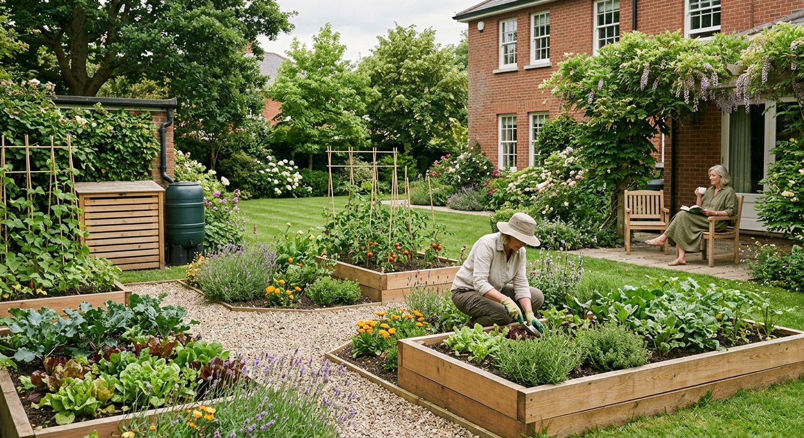
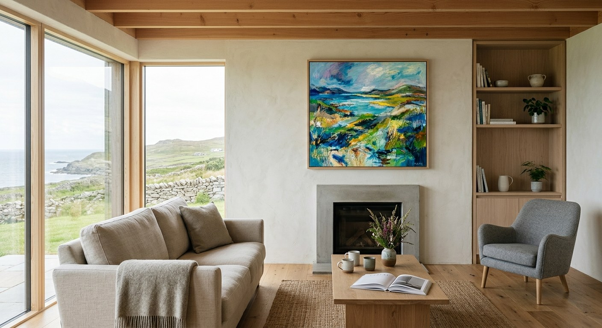
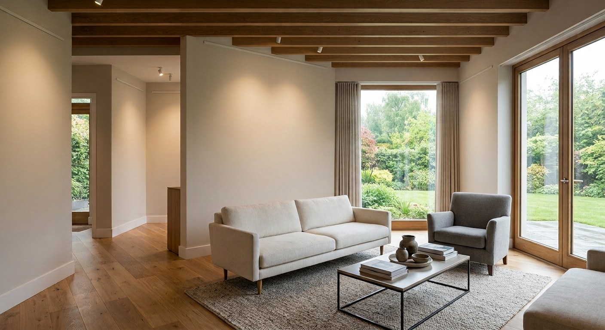

Create an Extra Room New planning rules have made adding an extra room much simpler.
Four Ways to Get More Space Four ways to make more space, set side by side before you commit to one.
Build a Home in Your Garden A small home at the far end of the garden, and what the new rules allow.
Share Your Spare Garden Let someone nearby grow food on a small part of your garden.
Buy Original Irish Art Discover and buy original artwork from artists across Ireland.
Host an Art Exhibition at Home Open your home for a weekend exhibition and support local artists.